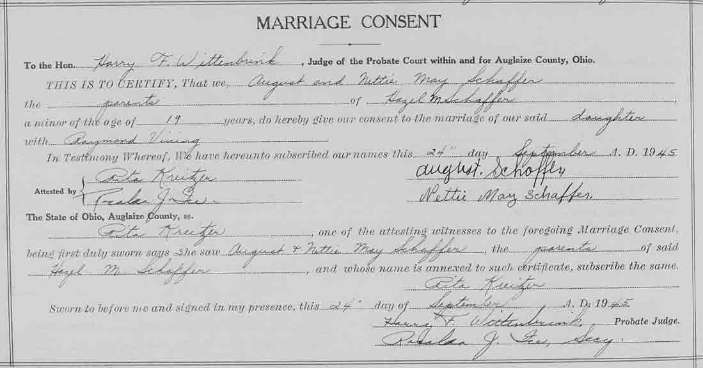
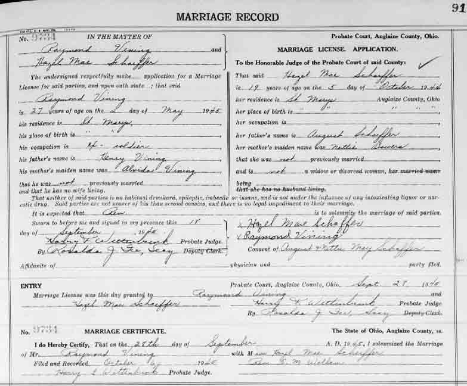

Marriage Data
Consent to marriage for Hazel M. Schaffer:

Death Data
Headstone for Donna (Vining) Spangler, daughter of Raymond Vining and Hazel M. (Schaffer) Vining, in Elm Grove Cemetery, Saint Marys, Auglaize County, Ohio (from Find A Grave):